このとき、次の各Nに対してf(n)の最小値を求めよ。
東京大学 1995年 理科 第4問
問題
Nを正の整数とする。Nの正の約数nに対し、 とおく。
とおく。
このとき、次の各Nに対してf(n)の最小値を求めよ。
(1) 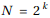、ただしkは正の整数
(2) N=7!
解答
(1)
正の実数xに対して定義される関数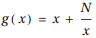を考える。
g'(x)を求めると
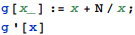
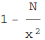
だから、
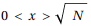のときg(x)は単調減少。
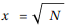のときg(x)は最小値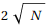
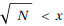のときg(x)は単調増加。
従ってf(n)が最小となるnのは に等しい約数nを持つ時はn、
に等しい約数nを持つ時はn、
または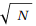に等しい約数が無い時はより大きい最小の約数か、 より小さい最大の約数、のいずれかである。
より小さい最大の約数、のいずれかである。
 の約数は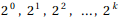のk+1個であるから、
の約数は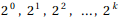のk+1個であるから、
(i) nが偶数の時
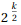は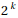の約数であり、このときf(n)は最小値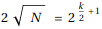
(ii) nが奇数の時
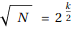より大きい最小のの約数は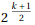であり、このとき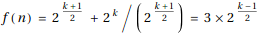
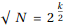より小さい最大の の約数は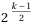であり、このとき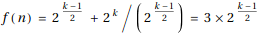
の約数は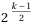であり、このとき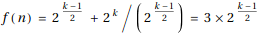
であるから、どちらの場合も最小値を取り、その値は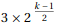である。
(i), (ii)より、求めるf(n)の最小値は
nが偶数のとき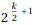、nが奇数の時
(2)
Nに対するf(n)の最小値を返す関数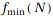を実装する。
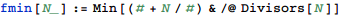
よって求める答えは

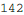
補足・感想
正しいことを示せるのは最初の有限個の項に限るが、FindSequenceFunctionを使って(1)を解く。
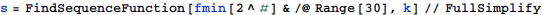
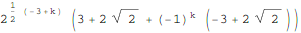
これをkの偶奇によって分けると、
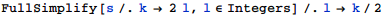
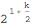
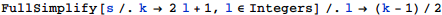
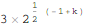
となり、答えと一致する。